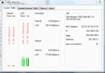
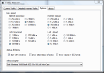

trafficWatcher
$ADSENSE_TOP$trafficWatcher is a small tool to monitor your network activity.
Unlike other tools, trafficWatcher can differentiate between traffic inside your LAN and the traffic that reaches the internet. It shows the current up and download speed in a small icon in the system tray.
More detailed traffic information can be shown in the dialog:
The options page allows to set the network card to use and the max speed you expect:

You can download it from the download page.
Note: you must first install WinPCap!